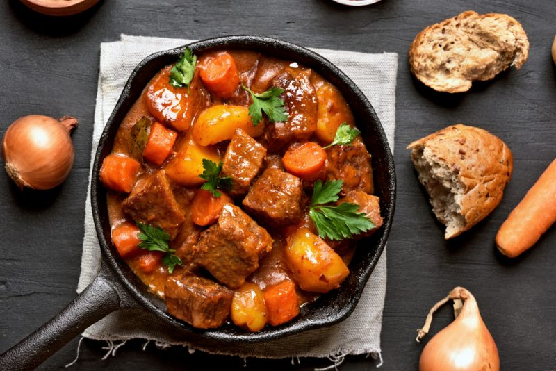

מתכון ״גוליאש״ (סוניה)
הכל עשוי בסיר. בלי מלח!
בשר טוב (לגולאש עד 500 גר״)

- לחתוך בצל לטגן בשמן
- לחתוך בשר לקוביות קטנות ולהוסיף לבצל. לסגור (לטגן) מכל צדדים
- להוסיף 4 שני שום חתוכים
- גמבה (2) לחתוך לפסים, להוסיף לטיגון עוד כמה דקות (אפשר חצי פלפל חריף בלי חרצנים!!), חצי כפית פלפל שחור
- להוסיף רסק אגבניות קופסה קטנה
- כף (לא כפית) פפריקה מתוקה
- שני גזרים חתוכים לקוביות (חצי, פסים, קוביות), להוסיף לטיגון עוד 5 דקות
- להוסיף מיים. להביא לרתיחה. לסגור. בישול של שעתיים וחצי.
- 4 תפוחי אדמה - קוביות (3+3+קוביות), לשטוף, מהמליח (כף מלח), להוסיף למרק
- שעת בישול